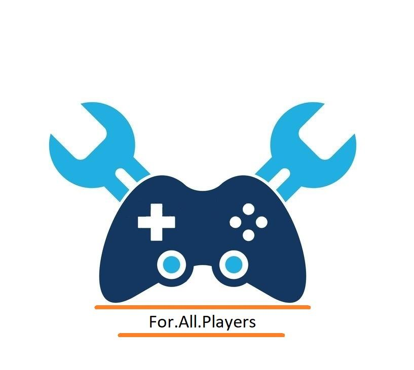
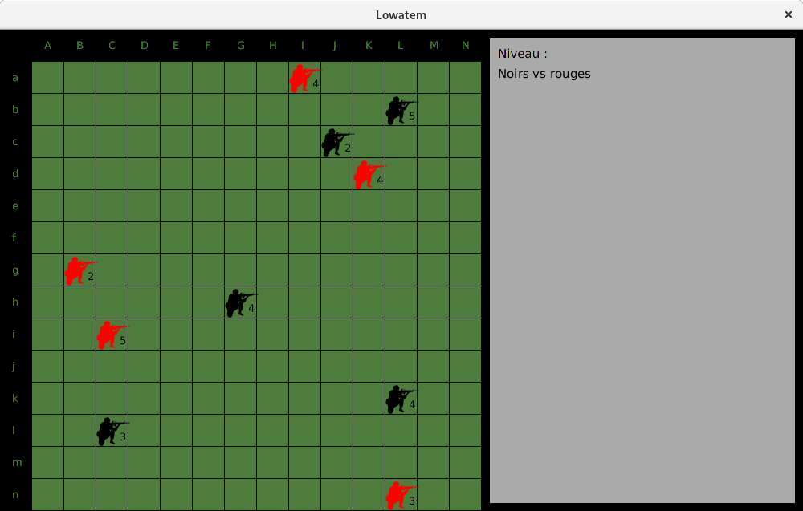
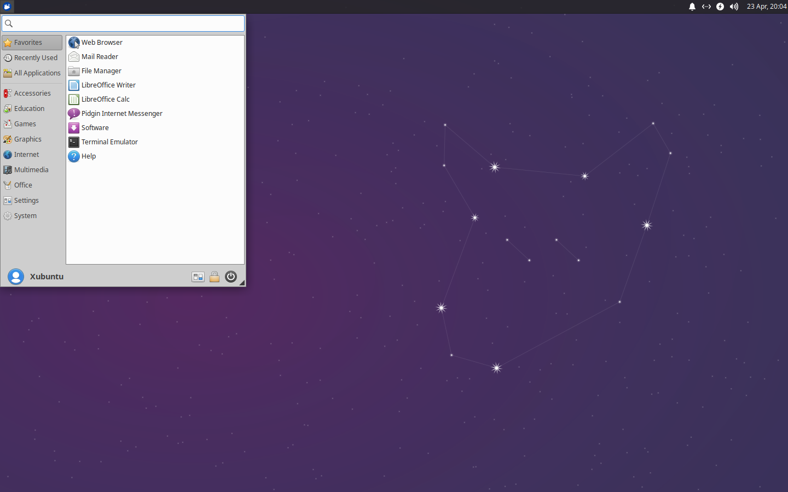
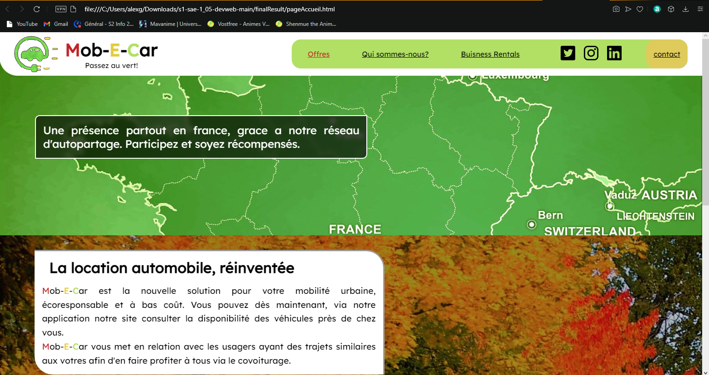
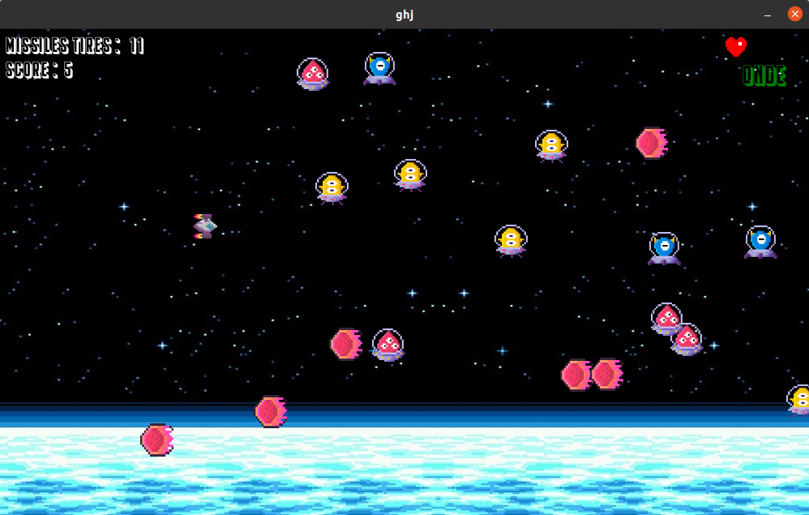

J'ai était admis au Baccalauréat, en suivant les spécialites Mathématiques, Numérique et science informatique et Physique-Chimie et en abandonnant cette dérnière en Terminal, au Lycée Val de Garonne, à Marmande.
Bonjour, je suis Alex Guimbeau, étudiant en BUT Informatique
J'ai était admis au Baccalauréat, en suivant les spécialites Mathématiques, Numérique et science informatique et Physique-Chimie et en abandonnant cette dérnière en Terminal, au Lycée Val de Garonne, à Marmande.
Entré en première année de BUT informatique de l'IUT de Bordeaux Gradignan
Dans ce projet, avec mes associé, nous devions créer de zero une entreprise que devrais se lançer dans un secteur d'activitées. Afin d'y arrivée nous devions faire une étude du marché, repéré les concurrents et se démarqué de ses derniers. 
Le projet consiste a définir et coder les règles d'un jeu de stratégie, jouable a 2 joueurs et créer un intelligence artificiel (IA) pour y jouer elle est diviser en 2 partie: le code du jeu, et la création d'une IA. Dans ce projet, es fonctionnalités sont répartie en diférents niveaux, de plus en plus conplexe. j'ai aussi créer deux IA capable de respecter les règles coder précedement, mais aussi de pouvoir gagner le plus possible contre d'autres IA. 
L'objectif de ce projet était d'installer 2 postes de travail : un administrateur (Alice) et un dévelloppeur (Bob) pour l'entreprise BUTGAMES 
Dans ce projet, avec mes associé, nous devions créer de zero une entreprise que devrais se lançer dans un secteur d'activitées. Afin d'y arrivée nous devions faire une étude du marché, repéré les concurrents et se démarqué de ses derniers. 
Pour ce projet, on doit créer un atelier Processing pour introduire des lycéens à la programmation lors de la Journée Porte Ouvertes de l’IUT de Bordeaux. 